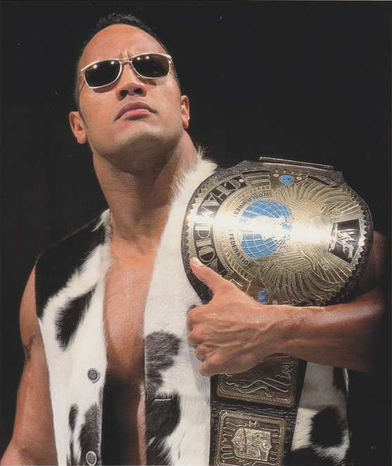
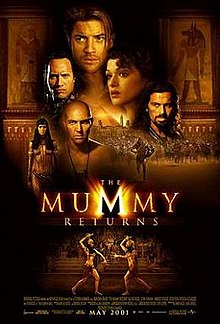

The Rise of the Great One
Dwayne Johnson grew up in a wrestling family, with his grandfather (Peter
Maivia) and his father
(Rocky Johnson). His original plans was to pursue football, and attended Miami University to
play
for the Hurricanes. With no prospects coming, he decided to pursue a wrestling career. He made
his
debute on WWF's (now WWE) Survivor Series on Nov. 25, 1996.
Although the Rock Maivia had a bit of a "rocky" start, be grew to become a
fan favorite. He became
leader of Nation of Domination, changed him to "the Rock", and from there his status as a single's
competitor quickly rose. This rise to super stardom earned him many PPV main event matches, and
accolades through out his career.
- 2x WCW World Champion
- 8x WWE World Champion
- 2x Intercontinental Champion
- 5x Tag Team Champion

Becoming the Most Electrifying Man in Entertainment
The Rock then moved his career stardom to the Hollywood big screen. His big
break came in 2001 with "The Mummy Returns." Dwayne Johnson overtime rose to become one of the most
popular and highest paid actors. He's become a
household name in the industry with features in "The Fast and Furious" series and HBO's "Ballers".
